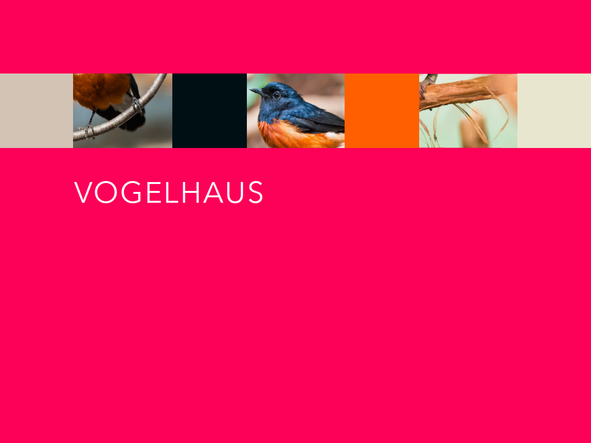
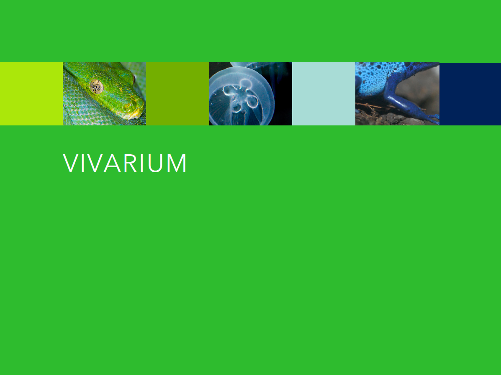
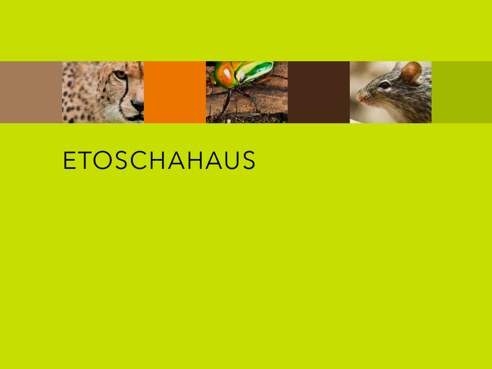
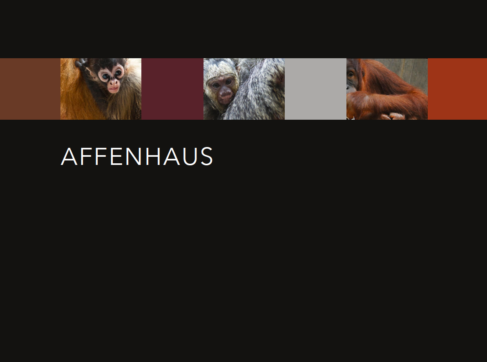

Zoo Farbkonzept
Mir ist beim erstellen der Website aufgefallen, dass die Farbkombination einen fröhlicheren Eindruck macht. Mir ist aufgefallen, dass sie auch bei Werbungen oder Plakate mehr auffallen würde. Da die Farbflächen auch zur Orientierung dienen, fallen die gesättigte Farben viel mehr auf und das war auch mein Ziel. Auffallend stark gesättigte Farben finden, welche gleichzeitig einen spannenden Farbklang bilden. Zoo Besucher sollen sich die Farben merken können, sie sollen die Farben sehen und die Kinder sollen von den Farben angezogen werden. Ich habe mit viel komplementär Farben gearbeitet. Was aber auch spannend ist, dass ich mit den komplementär Farben wie magenta, grün und gelb auch die stärksten zwei hell-dunkel Kontraste einfüge konnte. Was ich toll an komplementär Farbe finde, ist das sich die Leuchtkraft steigert wenn sich 2 komplementär Farben nebeneinander befinden. (magenta:grün). Ich finde auch, dass man schwer entscheiden kann, ob die Farben eher kalt oder warm sind. Ich empfinde diese Farben als warm, vielleicht weil sie stark gesättigt sind. Die einzige Farbe welche ich als kalt empfinde und das auch passend zum Haus, ist das VIVARIUM grün. Beim warm-kalt Kontrast wird auch grün im Allgemeinen mit blau als kalte Farbe bezeichnet. Bei den kleinen Farbflächen fand ich es sehr anspruchsvoll passende Farbtone zu finden. Ich habe es mit vielen verschiedenen arten versucht. Mit hellen, mit dunklen oder mit vergrauten Farben versucht. Doch schlussendlich habe ich mich entschieden alle Farbflächen zu mischen und keine einklassige Farbreihe zu machen. Ich habe verschiedene Kontraste und Sättigungen genützt und habe ebenfalls auch mit helldunkel, warm und kalt gearbeitet. Was mich sehr glücklich macht, weil meine Arbeit dadurch nicht eintonig ist, und einen sehr spannenden Klang hat.
   